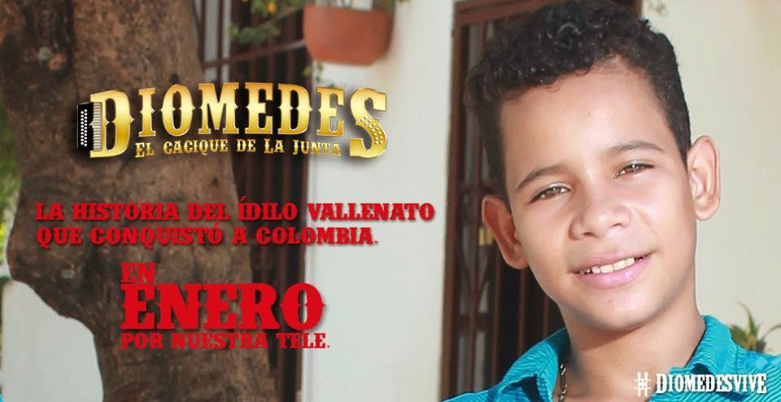
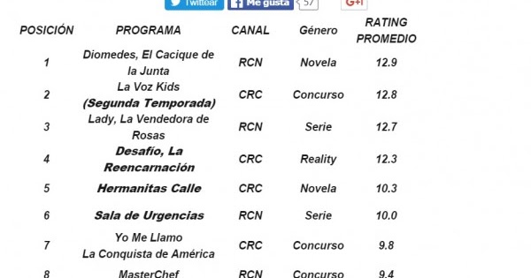
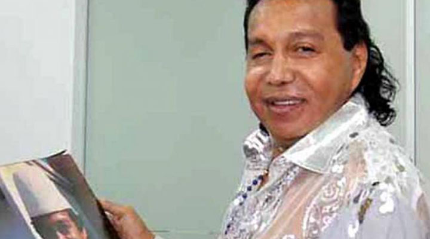
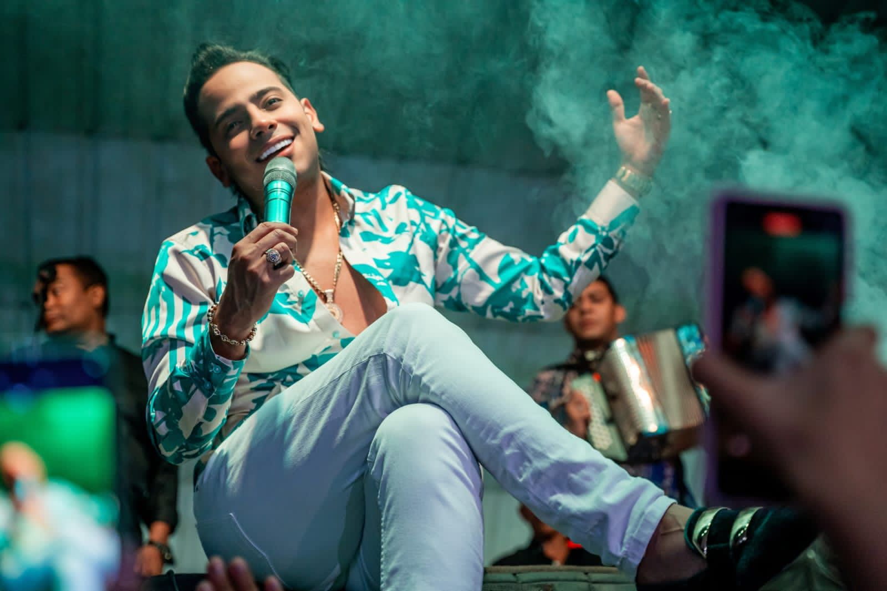

Estas En Eventos y Curiosidades
Eventos especiales de la telenovela
La Campaña de Lanzamiento

Antes del estreno, RCN lanzó una campaña promocional con la etiqueta #Diomedizate. Hubo voces de protesta a nivel nacional por el lanzamiento, porque algunas personas pensaban que el cantautor fallecido no era un personaje digno de una telenovela. Quienes la criticaban decían que su imagen no era un modelo a imitar, y algunos la comparaban con las narcoseries.
El estreno, 13 de enero de 2015

Fue un evento televisivo. El primer capítulo marcó 12.9 puntos de rating, frente a 10.3 de su competidora Hermanitas Calle, y fue el programa más visto de la televisión nacional ese día. Un medio comentó que Caracol, sin “La Voz Kids” en esa franja, no tenía mucho con qué responderle
Curiosidades
La Estructura La Puso Diomedes

En los primeros capítulos iba a haber una pequeña introducción a su vida y luego flashbacks. Fue una propuesta del propio Diomedes, quien estaba muy interesado. Alcanzó a colaborar con los libretistas y a aprobar los primeros capítulos de su propia novela.
La polémica de las canciones

En 2023, un comediante acusó a Orlando Liñán de engañar a la audiencia porque no cantaba las canciones en la novela. Es una acusación de un tercero.